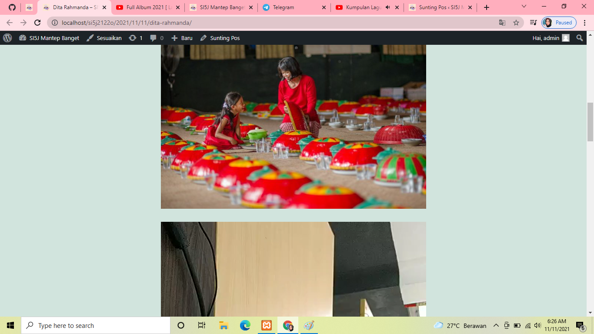

NIM: 1922500076
Nama: Dita Rahmanda
Kelompok: SI5J
Hasil atau kesimpulan dari pertemuan adalah:
- materi pertemuan ke 3 merupakan materi uts
- mengatasi json error dengan mengganti htacces
- menambahkan judul pada postingan wordpress
- edit tulisan konten dengan bold, italic dsb
- menambahkan media(gambar, link, dan video)
- gunakan everything untuk mencari media lebih cepat
- edit postingan
- cara menyimpan draf/konsep konten yang belum selesai dibuat
- mebuat postingan yang dapat dibuka pada tanggal yang sudah ditetapkan
-
- menambahkan password pada konten pribad
- menambahkan kategori konten sebagai menu tampilan
- menabahkan tag agar konten kita muncul pada saat pencarian sesuai dengan keyword
- pembatasan komentar
- cara maximize ukuran media dengan menambahkan codingan pada htaccess
- mengunggah media dengan media pustaka untuk menghemat ruang wordpress pada saat hosting
berikut tampilan konten yang telah diposting:
